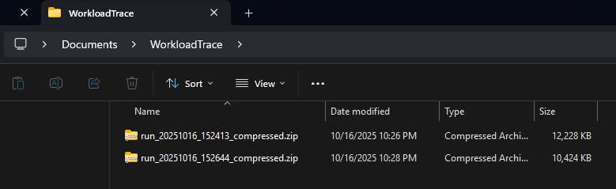

Upload Guide
This page contains the information about manual traces uploads procedure. If you're using automatic upload, you can skip this.
Trace Output Format
Each time you stop the tracer, the tool saves a set of files.
The files are stored in a folder with this pattern:
Windows:
[output path chosen]\windows_trace\[pc_identifier]\[initial run timestamp]\[trace_output_type]\[trace_file].csv.zst
Linux:
[output path chosen]/linux_trace/[pc_identifier]/[initial run timestamp]/[trace_output_type]/[trace_file].csv.gz
What to upload?
Open the output path that you have set on your tracer. In my case, I saved it to Documents\WorkloadTrace

Please upload the whole windows_trace or linux_trace folder. DO NOT remove anything inside it.
Where to upload?
Upload the folder here: https://www.dropbox.com/request/cOJOGlm57Xn70pSC4ltg

You're done!